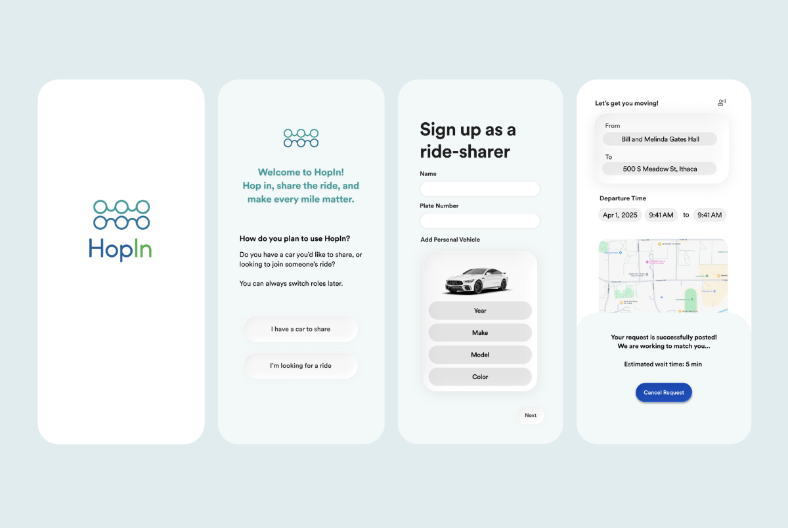

HopIn: Ride-sharing for Accessibility, Community and Equity

Designing for equity
I drove the UX design for HopIn: a ride-matching platform for Ithaca residents underserved by both public transit and rideshare apps. Over 10 weeks, I conducted user research, information architecture, and end-to-end interaction design.
01
Research
Conducted generative and evaluative research across 3 transit experts, 6 usability participants, and surveys with students, low-income residents, and riders with disabilities.
02
Design
Designed two parallel task flows (ride-sharer and ride-seeker) and an accessibility-first onboarding, structured around matching logic and equity heuristics.
03
XFN Work
Partnered with TCAT and Cornell Transportation Services to align feature scope with real transit gaps and shape a testable MVP.
Mapping the gaps
I looked at rideshare apps (Uber, Lyft), transit tools (Transit, Moovit, Google Maps), and Ithaca's TCAT service. Our report mapped this as a landscape where every option forces users to trade something away: convenience, affordability, safety, or coverage. No product was designed around the people transit systems leave out first.
Rideshare Apps
Fast and on-demand, but financially out of reach for daily use and extractive toward drivers. Not built for recurring, community-based trips.
Public Transit
Affordable but rigid schedules and limited late-night coverage make everyday travel unreliable for workers and students.
Informal Carpools
High trust, low cost, but invisible. Access lives in group chats, so mobility becomes a function of the social capital you already have.
Listening to riders left behind
Following our Universal Traveler research plan, I combined semi-structured interviews, surveys, laddering, and directed storytelling across three target groups: students and young adults, low-income community members, and people with disabilities. Four distinct voices emerged:
Low-Income Rider
"I walk forty minutes to avoid the fare. When the bus is late, I miss my shift."
Cornell Student
"Winter here means constantly cancelled routes and delayed buses"
Off Campus Student
"Lots of routes stop operating at night, leaving me with very little options."
Community Member
"I often have to plan my entire day around the transit schedule."
Every user was optimizing around a system that wasn't built for them. These voices became the anchors I returned to when sketching flows and prioritizing features.
Four MVP features
From over 40 raw ideas in our report, I synthesized six categories and pressure-tested them against accessibility, coverage, feasibility, and equity. Four feature areas made the cut, each tied directly to a research theme:
Community Ride Matching
An algorithm that pairs riders on shared destinations and time windows, priced roughly 80% below Uber with 100% of the fare going to the driver.
Trust & Verification
Verified profiles with photo, bio, license, insurance, and driving record so both sides know who they're actually meeting.
Accessibility First
Persistent accessibility preferences set once at onboarding, so users don't re-explain their needs on every ride request.
Community Layer
A soft social layer of neighborhood profiles and repeat matches, so mobility becomes recurring relationship, not one-off transaction.
Splitting the flow
We initially had one unified flow for both drivers and riders. After a few sketch rounds, I flagged that this collapsed two very different mental models into one confusing surface. Ride-sharers were fitting a trip into an existing route; ride-seekers were solving a time-critical need. Same screen, opposite intent.
What I proposed instead
Two distinct entry flows, one for ride-sharers and one for ride-seekers, tied together by a shared matching layer. Different tasks, different UI.
Why it stuck
Research had surfaced clear trust and cognitive-load differences between the two roles. Splitting the flow supported that instead of forcing users to translate.
Three research-driven flows
I translated the four opportunity areas into three concrete flows, each shaped by a specific insight from user testing.
Testing in two rounds
Round one was a low-fidelity paper prototype tested with transportation experts through scenario tasks drawn from our report. Round two paired an AI-assisted heuristic audit with a medium-fidelity Figma prototype, tested with one Cornell student, three low-income residents, and community members with accessibility needs.
Four themes shaped the redesign
-
01
Trust
I redesigned the verification process to reduce uncertainty and safety concerns.
-
02
Cognitive Load
I simplified navigation and strengthened hierarchy so actions were easier to scan.
-
03
Accessibility UX
I kept accessibility preferences visible from onboarding through every ride.
-
04
Secondary Features
I deprioritized features like rewards so the core matching flow stayed focused and reliable.
Visual system
We wanted the platform to reflect the values we prioritized. Green reinforces sustainability, while blue conveys safety and trust. I paired these with rounded UI, friendly typography, and generous whitespace to create a calm, approachable experience that reduces cognitive load.
Every visual decision was conveyed one message: this is a place, not a marketplace.
What I learned
Equity is a structural design choice
I treated accessibility and affordability as starting constraints that shaped flows, IA, and tone, not as checkboxes to tick after.
Build for trust
Every meaningful decision was ultimately about trust. Verification profiles, transparent pricing, and repeat neighborhood matching helped riders feel more confident.
Designing for what matters
Human-paced community design serves users that on-demand products quietly leave out. Designing around reliability and trust led to a fundamentally different product.